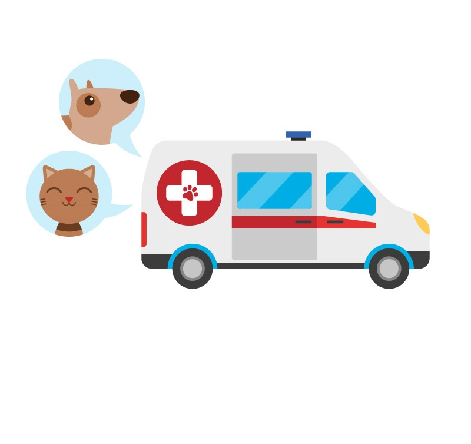
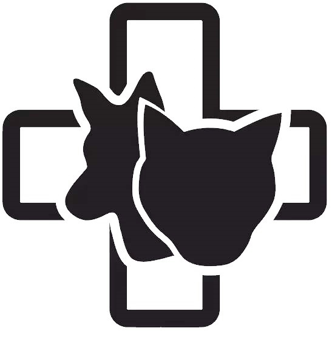
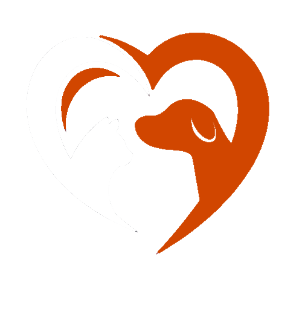

Benvenuti al centro adozioni PD
Siamo una associazione non profit dedicata a salvaguardare e trovare delle amorevoli famiglie per cani e gatti bisognosi. Adottare un animale porta un enorme gioia sia per la persona sia per i nostri simpatici amici a 4 zampe.
É importante ricordare che sono presenti norme da rispettare se si vuole procedere con l'adozione e che gli animali non sono ogetti usa e getta e per cui prima di adottare bisogna compiere le opportune considerazioni.
Cosa facciamo:
- Salvataggio
- 
I nostri operatori si occupano del salvataggio degli animali che ci vengono segnalati.
- Cura
- 
Prestiamo le cure mediche necessarie ai trovatelli e li riabilitiamo.
- Adozione
- 
Rendiamo sicura l'adozione sia per le persone che per gli animali con controlli attitudinali e controllo della zona ove l'animale verrà collocato.
- Post adozione

Offriamo dei tool sul nostro sito che facilitano il controllo regolare dei pet adottati ricordado tempistiche per controlli periodici, dando consigli specifici per razza e prenotazioni per visite vetrinarie nei nostri centri convenzionati.